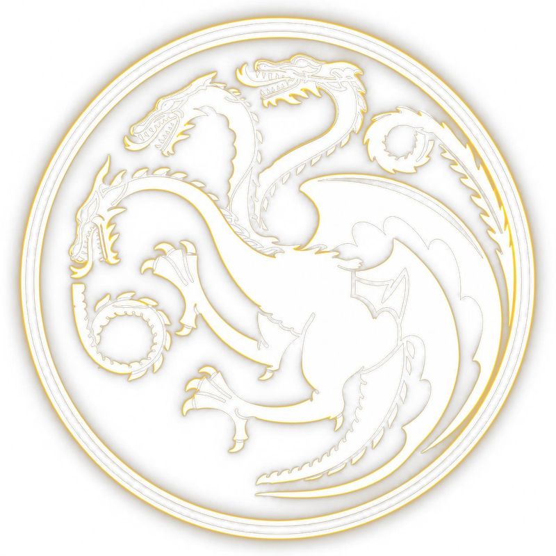
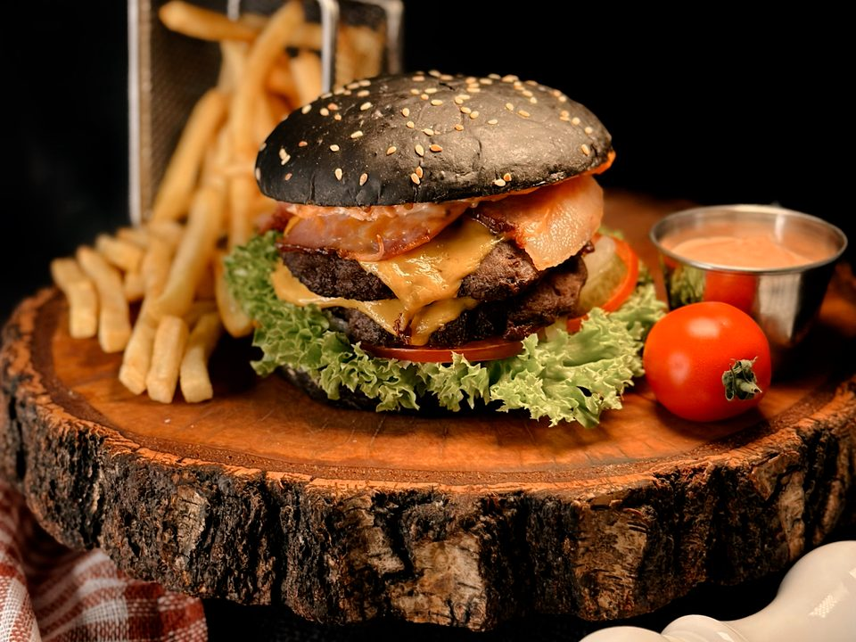
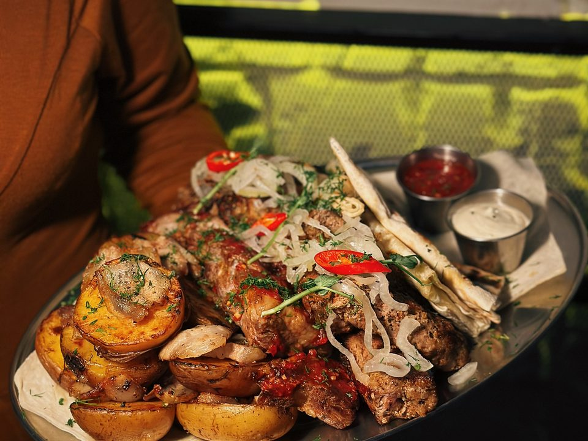
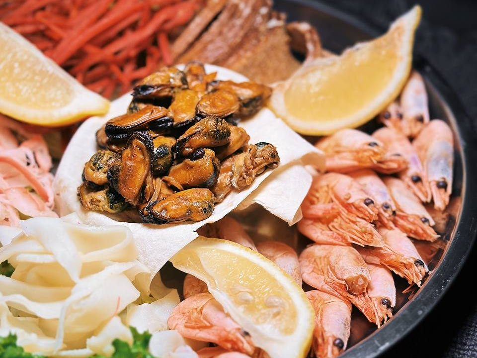
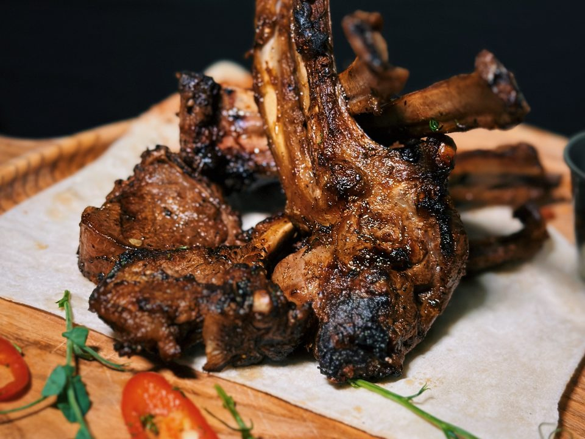

Перейти до меню

Art-Pub Gorynych
Чернігів · просп. Перемоги, 104
+380 99 063 9544
Instagram
Меню ресторану
Art-Pub Gorynych
11:00–22:30
просп. Перемоги, 104
ціни у грн




Пошук
✕
Все меню
Страви
Бар
З фото